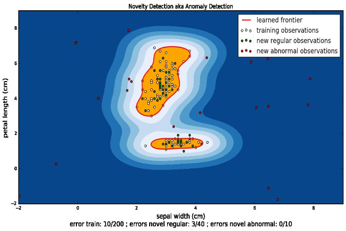

Posted: 2016-10-07
I had a great time interacting with some of the most motivated people I've ever met at the Data Science Summit in Atlanta, GA, on September 26 and 27th.
The attendees showed up to learn new skills in the analytics domain. A colleague and I delivered two courses for the price of one (well, at the very least they were in the same room - choose your own adventure) and we saw people so motivated, they worked for a full 3 hour session, heads down, and with an intense drive. The courses were self-paced and self-guided with us there as proctors. The other course in the room was on Microsoft R Server and SQL Server R Services, however my expertise lay in Python for Data Science, a course I created and that was recently released on the landing page of https://notebooks.azure.com. This course's audience includes those:
- New to Python
- Experienced with Python, but not data science
- In need of a refresher
- Hoping to learn a little about the Python 2 to 3 change
- In need of a handy modular reference
- ...
Azure Notebooks was released the first day of the courses and used for the 13-module Python for Data Science course covering,
for those new to Python,
- Basics
- Data Structures
- Functional Programming
- Sorting and Pattern Matching
- Object Oriented Programming
- Basic Difference from 2 to 3
and for the DS, - Numerical Computing
- Data Analysis with pandas I
- Data Analysis with pandas II
- Machine Learning I - ML Basics and Data Exploration
- Machine Learning II - Supervised and Unsupervised Learning
- Machine Learning III - Parameter Tuning and Model Evaluation
- Visualization
This course includes the gambit. From list comprehension:
# Solution to list comprehension exercise
# Solution to list comprehension exercise
letters = list('thepurposeoflife')
# Place your list comprehension below
output = [x.upper() if x is 'e' else x for x in letters]
print(''.join(output))
Which gets you:
thEpurposEoflifE
To anomaly detection with a one-class SVM in scikit-learn:
import numpy as np
import matplotlib.pyplot as plt
import matplotlib.font_manager
from sklearn import svm
from sklearn.datasets import load_iris
from sklearn.cross_validation import train_test_split
# Iris data
iris = load_iris()
X, y = iris.data, iris.target
# Taking only two columns...
labels = iris.feature_names[1:3]
X = X[:, 1:3]
# split
X_train, X_test, y_train, y_test = train_test_split(X, y, test_size = 0.3,
random_state = 0)
# make some outliers
X_weird = np.random.uniform(low=-2, high=9, size=(20, 2))
# fit the model
clf = svm.OneClassSVM(nu=0.1, kernel="rbf", gamma=1, random_state = 0)
clf.fit(X_train)
# predict labels
y_pred_train = clf.predict(X_train)
y_pred_test = clf.predict(X_test)
y_pred_outliers = clf.predict(X_weird)
Which when plotted in matplotlib results in revealing some decision boundaries around if a value is weird or not from the iris dataset (and some made-up values for testing):

You can find the Notebooks offering at https://notebooks.azure.com and the Python course on the main page with the tutorials near the bottom and titled Fundamentals of Data Science with Python. It's free, just like the product, Azure Notebooks. The course is actually a Library.
It was a really fun and challenging to create and I'm so very glad to have it released into the wild. It contains exercises as well, some simple and some for those who enjoy a challenge themselves.
For example, in this exercise a student is asked to create a Wallet for your friend Amy, let Amy earn some money and then let Amy spend some of that money.
class Wallet:
'''The Wallet class holds cash for a owner.'''
def __init__(self, owner, cash):
self.owner = owner
self.cash = cash
# Spend method
def spend(self, amount):
'''The spend method removes a given amount of money from the wallet.'''
self.cash -= amount
# Earn method
def earn(self, amount):
'''The earn method adds a given amount of money to the wallet.'''
self.cash += amount
I can't wait to add more modules. Python will attack big data in the next one with dask. Stay tuned.
My colleague and I also made use of the "stickies" teacher's aid. We handed out blue and red sticky notes to all of the attendees and so when they had a question or got stuck, they could simply place a red sticky on the front of their laptop and we could see the "flag" and come to help. This way the attendees didn't need to raise a hand at all, creating a situation where everyone had a chance to get questions answered or help when they needed without a tired arm or feeling as if they were disrupting the self-paced classroom.
The Jupyter notebooks were new to about 90% of the attendees so an in promptu tutorial was given at the beginning to familiarize the attendees with the learning framework. An introduction to Python-flavored Jupyter notebooks is provided on my GitHub on this notebook. If you are looking for an R-flavored one, I have one here. Please enjoy and know there are tons of resources on the net regarding Jupyter notebooks and learning Python or R (Jupyter actually is a portmanteau of Julia, Python and R). I plan to write a short blog on using them and multi-tenant Jupyter notebook frameworks for teaching in another blog post. Many posts have been promised so I better end this one.